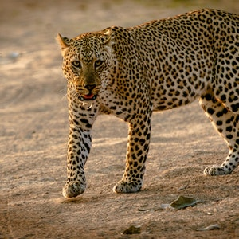

Once they spot prey they will sneak up as close as they can and then use their superior speed to catch the prey.
- Scientific Name: Acinonyx jubatus
- Average Length: 5 feet
- Average Lifespan: 12 years
- Habitat: Open Savanna
The fastest land animal is the cheetah, which has a recorded speed of between 109.4 km/h (68.0 mph) and 128 km/h (80 mph) with the fastest reliable speed being 98 km/h (61 mph).